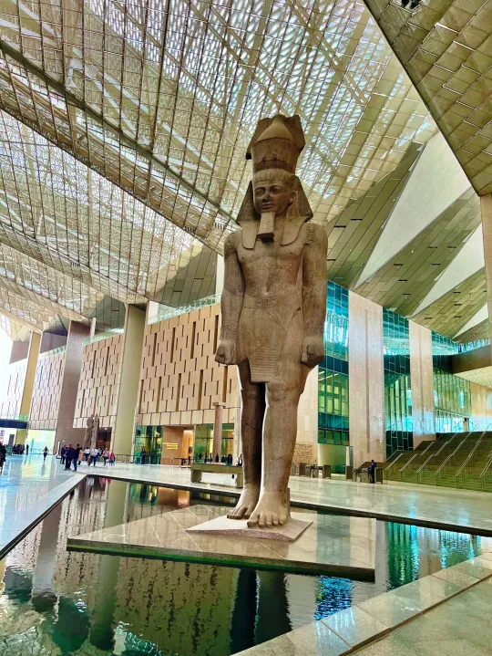

About Delay The Opening
The opening of the Grand Egyptian Museum (GEM) has been delayed and is now scheduled for the final quarter of 2025. This delay is primarily due to escalating regional instability and security concerns, specifically the ongoing conflict across the region. The postponement aims to ensure the museum's grand opening receives the international attention and atmosphere it deserves, reflecting Egypt's cultural and historical significance.
The opening of the Grand Egyptian Museum (GEM) has been delayed and is now scheduled for the final quarter of 2025. This delay is primarily due to escalating regional instability and security concerns, specifically the ongoing conflict across the region. The postponement aims to ensure the museum's grand opening receives the international attention and atmosphere it deserves, reflecting Egypt's cultural and historical significance.
The Museum Contains
The Grand Egyptian Museum (GEM) contains over 100,000 artifacts, showcasing the vast history of ancient Egypt, including the complete treasures of King Tutankhamun, a solar boat of King Khufu, and many other significant pieces. The museum is designed to display these artifacts, many of which are being shown for the first time, in a way that allows visitors to experience the breadth of Egyptian civilization.
The Grand Egyptian Museum (GEM) contains over 100,000 artifacts, showcasing the vast history of ancient Egypt, including the complete treasures of King Tutankhamun, a solar boat of King Khufu, and many other significant pieces. The museum is designed to display these artifacts, many of which are being shown for the first time, in a way that allows visitors to experience the breadth of Egyptian civilization.